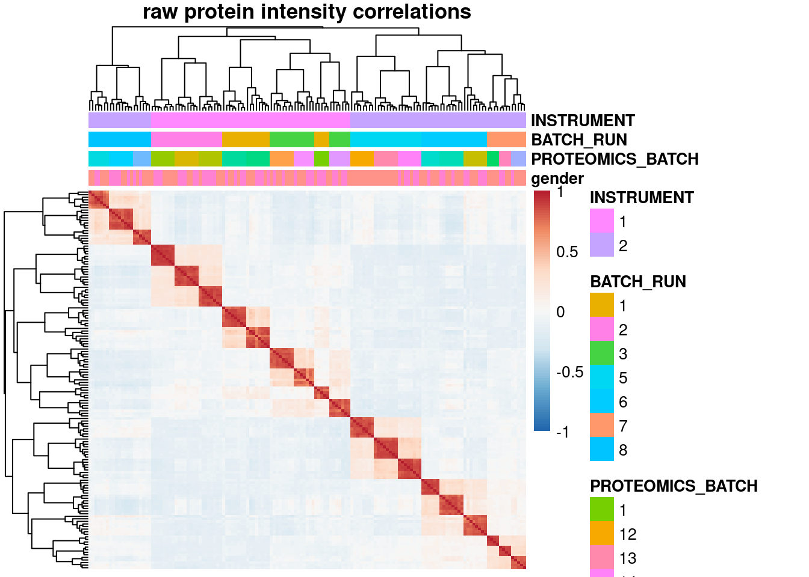
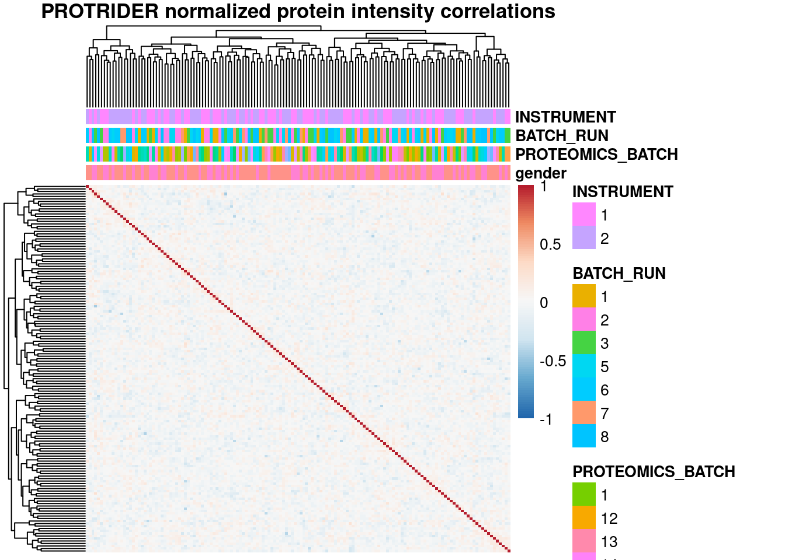
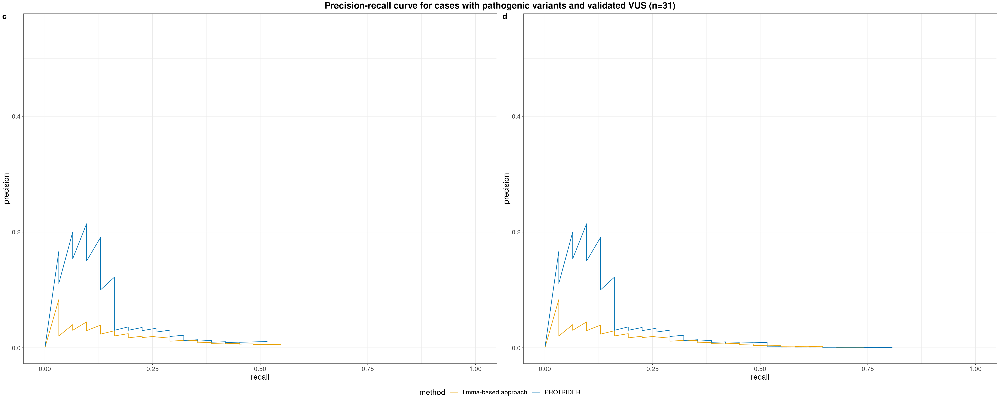
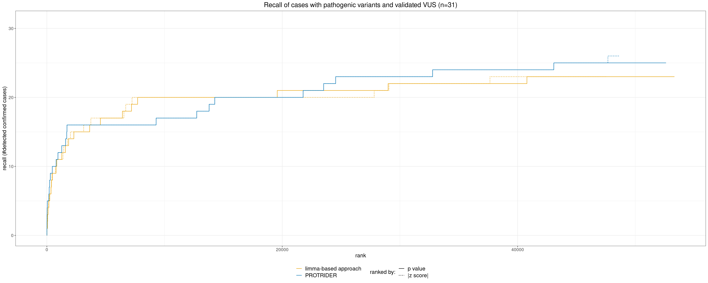
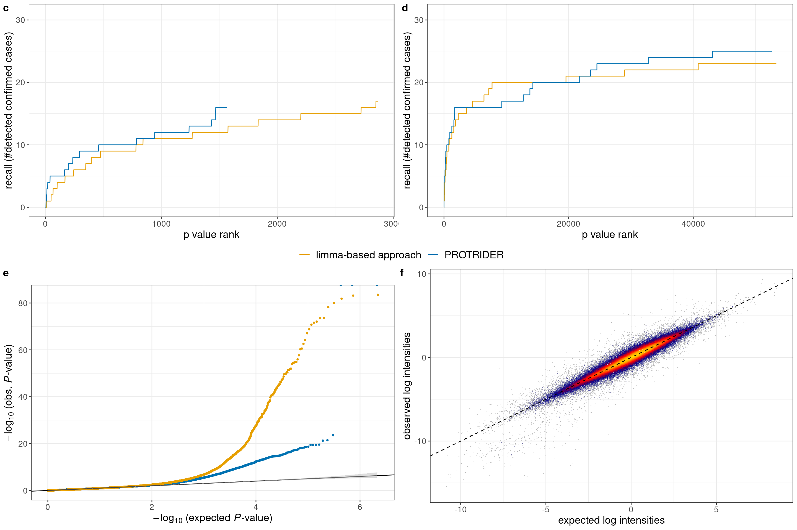
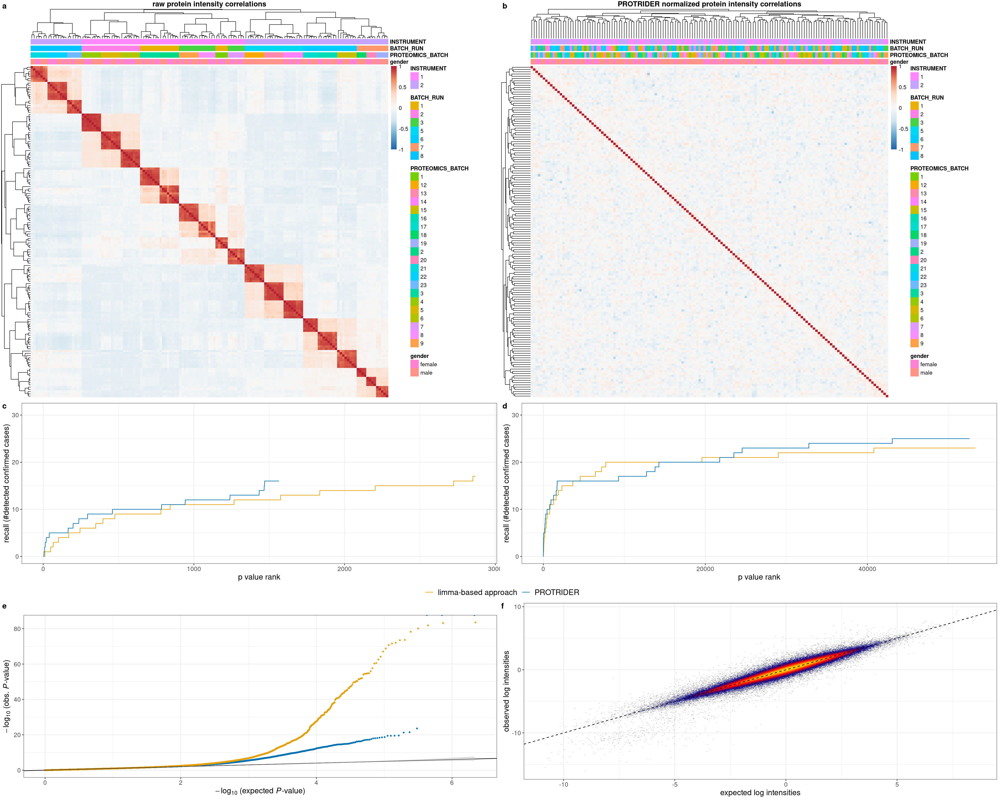

PROTRIDER comparison to limma-based approach
scheller, loipfinger
2021-02-15
############################################
### plot limma - protrider benchmark
source('src/config.R')
library(plyr)
library(dplyr)
library(data.table)
library(ggplot2)
library(ggpubr)
library(ggplotify)
library(RColorBrewer)
# Read annotation
# sa <- fread('/s/project/mitoMultiOmics/multiOMICs_integration/processed_data/protrider/protrider_annotation.tsv') %>% as.data.frame()
sa <- fread(snakemake@input$protrider_annotation) %>% as.data.frame()
rownames(sa) <- sa$SAMPLE_ID
sa$PROTEOMICS_BATCH <- as.character(sa$PROTEOMICS_BATCH)
sa$BATCH_RUN <- as.character(sa$BATCH_RUN)
sa$INSTRUMENT <- as.character(sa$INSTRUMENT)
# load protrider summarized experiment
se <- readRDS(snakemake@input$protrider_object)
# se <- readRDS('/s/project/mitoMultiOmics/multiOMICs_integration/processed_data/protrider/protrider_obj.rds')
Fig_S5a <- as.ggplot(pheatmap(cor(assays(se)$X, use="complete.obs"),
main= 'raw protein intensity correlations',
annotation_col = sa[ , c("gender", "PROTEOMICS_BATCH", "BATCH_RUN", "INSTRUMENT")],
breaks = seq(-1,1, length.out = 100),
na_col = "grey",
show_colnames = FALSE,
show_rownames = FALSE,
#legend = FALSE,
#annotation_legend = FALSE ,
color=colorRampPalette(rev(brewer.pal(n = 7, name = "RdBu")))(100)))
plot_matrix <- assays(se)$X - assays(se)$X_pred
Fig_S5b <- as.ggplot(pheatmap(cor(plot_matrix, use="complete.obs"),
annotation_col = sa[ , c("gender", "PROTEOMICS_BATCH", "BATCH_RUN", "INSTRUMENT")],
main= 'PROTRIDER normalized protein intensity correlations',
breaks = seq(-1,1, length.out = 100),
na_col = "grey",
show_colnames = FALSE,
show_rownames = FALSE,
color=colorRampPalette(rev(brewer.pal(n = 7, name = "RdBu")))(100)))
#Fig_S5ab <- Fig_S5a | Fig_S5b
Fig_S5ab <- ggarrange(Fig_S5a, Fig_S5b, ncol=2, common.legend=TRUE, legend="right", labels=letters[1:2])
Fig_S5ab
# figure: correlation structure between protein intensities of samples in mitochondrial disease cohort.
# Left: correlation matrix of the protein-wise centered log2-transformed raw intensities with a dendrogram which represents sample-wise hierarchical clustering.
# Known confounded effects (instrument, MS-run batch and gender) are displayed on the top.
# A strong positive correlation (red) is visible between samples of the same MS-run.
# Right: the correlation matrix for normalized intensities after PROTRIDER was applied and corrected for known and unknown confounder effects.
pdf(snakemake@output$fig1, # "/s/project/mitoMultiOmics/multiOMICs_integration/Figures/Supplementary_figures/S_Fig5_ab.pdf",
width = 24, height = 10, useDingbats=FALSE )
print(Fig_S5ab)
dev.off()## png
## 2rm(se, sa, plot_matrix )
############################################
############################################
### read in protrider results
protrider_filename <- snakemake@input$protrider_results
protrider_pval_list <- as.data.table(readRDS(protrider_filename))
protrider_pval_list$sample_prot = paste0(protrider_pval_list$SAMPLE_ID,"_", protrider_pval_list$geneID)
### read in limma results
limma_filename <- snakemake@input$limma_results
limma_pval_list <- as.data.table(readRDS(limma_filename))
limma_pval_list$sample_prot = paste0(limma_pval_list$SAMPLE_ID,"_",limma_pval_list$geneID)
### keep only samples in both analyses, only if all whole limma list is considered
only_identical_samples <- intersect(limma_pval_list$sample_prot, protrider_pval_list$sample_prot)
pval_ae_pre <- subset(protrider_pval_list, sample_prot %in% only_identical_samples)
pval_limma_pre <- subset(limma_pval_list, sample_prot %in% only_identical_samples)
############################################
### get sample annotation
sa_prot <- fread(snakemake@input$sample_annotation)
sa_prot <- sa_prot[USE_FOR_PROTEOMICS_PAPER == T]
sa_prot$KNOWN_MUTATION <- toupper(sa_prot$KNOWN_MUTATION)
etp_m <- sa_prot[, c('SAMPLE_ID', 'KNOWN_MUTATION','CATEGORY')]
# sa = subset(etp_m, CATEGORY=="I")[,1:2] ### for only confirmed ones
# sa = subset(etp_m, CATEGORY %in% c("I", "IIa", "III"))[,1:2] ### for only confirmed ones
sa = subset(etp_m, CATEGORY %in% c("I", "IIa"))[,1:2] ### only cases with previous candidate
sa$confirmed_out = !is.na(sa$KNOWN_MUTATION)
sa$sample_prot = paste0(sa$SAMPLE_ID,"_",sa$KNOWN_MUTATION)
### merge known mutation to result lists
pval_ae_solved = join(pval_ae_pre,sa)
pval_ae_solved[is.na(confirmed_out), confirmed_out:=FALSE]
pval_ae_solved = pval_ae_solved[order(pval_ae_solved$PROTEIN_PVALUE),]
pval_ae_solved[, num_out_called:=cumsum(confirmed_out)]
pval_limma_solved = join(pval_limma_pre,sa)
pval_limma_solved$confirmed_out[is.na(pval_limma_solved$confirmed_out)] = FALSE
pval_limma_solved = pval_limma_solved[order(pval_limma_solved$PROTEIN_PVALUE),]
pval_limma_solved$num_out_called = cumsum(pval_limma_solved$confirmed_out)
############################################
### plotting
padj_cutoff = 0.1 #0.05
ae_plot = subset(pval_ae_solved, PROTEIN_PADJ <= padj_cutoff)
ae_plot$pvalue = log10(ae_plot$PROTEIN_PVALUE)
limma_plot = subset(pval_limma_solved, PROTEIN_PADJ <= padj_cutoff)
limma_plot$pvalue = log10(limma_plot$PROTEIN_PVALUE)
# # Recall plot from Stefan L.
# plot(1:nrow(ae_plot),ae_plot$num_out_called, 'l', lwd=2,
# col='orange', xlim=c(0,nrow(limma_plot)),
# ylim=c(0,max(max(ae_plot$num_out_called), max(limma_plot$num_out_called)) +2),
# ylab='recall (#detected confirmed cases)', xlab="p value rank", main=paste0('adj_pval: ',padj_cutoff,' outlier called') )
# lines(1:nrow(limma_plot),limma_plot$num_out_called, col='blue', lwd=2)
# legend('bottomright',
# legend=c(paste0('PROTRIDER [',max(ae_plot$num_out_called), ' in ',which.max(ae_plot$num_out_called),' / ' ,nrow(ae_plot),']') ,
# paste0('limma [',max(limma_plot$num_out_called), ' in ',which.max(limma_plot$num_out_called),' / ' ,nrow(limma_plot),']') ),
# col=c('orange','blue'), lty=1, lwd=10, title="method [confirmed cases]")
### same plot but as ggplot
ae_plot[, rank:=frank(PROTEIN_PVALUE, ties.method="min")]
ae_plot[, total:=.N]
ae_plot[, method:="PROTRIDER"]
limma_plot[, rank:=frank(PROTEIN_PVALUE, ties.method="min")]
limma_plot[, total:=.N]
limma_plot[, method:="limma-based approach"]
ae_limma_plot <- rbind(ae_plot[,.(pvalue, num_out_called, rank, total, method)],
limma_plot[,.(pvalue, num_out_called, rank, total, method)])
g <- ggplot(ae_limma_plot, aes(x=rank, y=num_out_called, col=method)) +
geom_line() +
scale_y_continuous(limits=c(0, nrow(sa)), breaks=seq(0, nrow(sa), by=10),
minor_breaks=seq(0, nrow(sa)-5, by=10)+5) +
xlab("p value rank") + ylab("recall (#detected confirmed cases)") +
#ggtitle(paste0("adj_pval <= ", padj_cutoff)) +
scale_color_manual(values=c("#E69F00", "#0072B2")) +
theme_bw() +
theme(text=element_text(size=14), title=element_text(size=14),
legend.title=element_blank(), legend.position="bottom", # c(0.8, 0.15)
plot.title = element_text(hjust = 0.5), legend.text=element_text(size=14))
# colors: orange, blue: "#E69F00", "#0072B2"
# g
#### precision recall plot
ae_plot[, `:=`(precision=num_out_called/rank, recall=num_out_called/nrow(sa))]
limma_plot[, `:=`(precision=num_out_called/rank, recall=num_out_called/nrow(sa))]
plot_dt <- rbind(ae_plot[,.(precision, recall, method)], limma_plot[,.(precision, recall, method)])
g_pr <- ggplot(plot_dt, aes(x=recall, y=precision, col=method)) + geom_line() +
scale_x_continuous(limits=c(0,1)) + scale_y_continuous(limits=c(0,0.55)) +
scale_color_manual(values=c("#E69F00", "#0072B2")) +
theme_bw() +
theme(text=element_text(size=14), title=element_text(size=14),
legend.position=c(0.8, 0.85))
# g_pr
### nominal p value cutoff
pval_cutoff = 0.05#0.1#0.05 #0.05 #1 #0.5#1# 0.05
ae_plot = subset(pval_ae_solved, PROTEIN_PVALUE <= pval_cutoff)
ae_plot$pvalue = log10(ae_plot$PROTEIN_PVALUE)
limma_plot = subset(pval_limma_solved, PROTEIN_PVALUE <= pval_cutoff)
limma_plot$pvalue = log10(limma_plot$PROTEIN_PVALUE)
ae_plot[, rank:=frank(PROTEIN_PVALUE, ties.method="min")]
ae_plot[, total:=.N]
ae_plot[, method:="PROTRIDER"]
limma_plot[, rank:=frank(PROTEIN_PVALUE, ties.method="min")]
limma_plot[, total:=.N]
limma_plot[, method:="limma-based approach"]
ae_limma_plot <- rbind(ae_plot[,.(pvalue, num_out_called, rank, total, method)],
limma_plot[,.(pvalue, num_out_called, rank, total, method)])
g_nominal <- ggplot(ae_limma_plot, aes(x=rank, y=num_out_called, col=method)) +
geom_line() +
scale_y_continuous(limits=c(0, nrow(sa)), breaks=seq(0, nrow(sa), by=10),
minor_breaks=seq(0, nrow(sa)-5, by=10)+5) +
xlab("p value rank") + ylab("recall (#detected confirmed cases)") +
#ggtitle(paste0("nominal pvalue <= ", pval_cutoff)) +
scale_color_manual(values=c("#E69F00", "#0072B2")) +
theme_bw() +
theme(text=element_text(size=14), title=element_text(size=14),
legend.title=element_blank(), legend.position="bottom",
plot.title=element_text(hjust = 0.5), legend.text=element_text(size=14))
# g_nominal
# ### combine into one Figure: panel a) recall for pvals with padj < 0.1; panel b) recall for all nominal pval < 0.05
# g_fig <- ggarrange(g, g_nominal, ncol=2, common.legend=TRUE, legend="bottom", labels=letters[3:4])
# common_title <- paste0("Recall of cases with pathogenic variants and validated VUS (n=", nrow(sa), ")")
# g_fig <- annotate_figure(g_fig, top = text_grob(common_title, face = "bold", size = 16))
# g_fig
#
# figure_file <- snakemake@output$fig
# ggsave(figure_file, g_fig, width=15, height=5)
# saveRDS(list("g_padj"=g, "g_nominal"=g_nominal), file.path(dirname(figure_file), "protrider_limma_figS5.rds"))
#### precision recall plot (nominal pvalue cutoff)
ae_plot[, `:=`(precision=num_out_called/rank, recall=num_out_called/nrow(sa))]
limma_plot[, `:=`(precision=num_out_called/rank, recall=num_out_called/nrow(sa))]
plot_dt <- rbind(ae_plot[,.(precision, recall, method)], limma_plot[,.(precision, recall, method)])
g_pr_nom <- ggplot(plot_dt, aes(x=recall, y=precision, col=method)) + geom_line() +
scale_x_continuous(limits=c(0,1)) + scale_y_continuous(limits=c(0,0.55)) +
scale_color_manual(values=c("#E69F00", "#0072B2")) +
theme_bw() +
theme(text=element_text(size=14), title=element_text(size=14),
legend.title=element_blank(), legend.position="bottom",
plot.title=element_text(hjust = 0.5), legend.text=element_text(size=14))
# g_pr_nom
# TODO only one plot needed, add the different pvalue cutoffs as shapes
g_pr_fig <- ggarrange(g_pr, g_pr_nom, ncol=2, common.legend=TRUE, legend="bottom", labels=letters[3:4])
pr_common_title <- paste0("Precision-recall curve for cases with pathogenic variants and validated VUS (n=", nrow(sa), ")")
g_pr_fig <- annotate_figure(g_pr_fig, top = text_grob(pr_common_title, face = "bold", size = 16))
g_pr_fig
#### plot with both pvalue and z-score cutoffs
pval_cutoff <- 0.05
zscore_cutoff <- 2
ae_plot_pval <- subset(pval_ae_solved, PROTEIN_PVALUE <= pval_cutoff)
ae_plot_pval$score <- log10(ae_plot_pval$PROTEIN_PVALUE)
ae_plot_pval[,method:="PROTRIDER"]
ae_plot_pval[,rankedBy:="p value"]
ae_plot_z <- subset(pval_ae_solved, abs(PROTEIN_ZSCORE) >= zscore_cutoff)
ae_plot_z$score <- -abs(ae_plot_z$PROTEIN_ZSCORE)
ae_plot_z = ae_plot_z[order(-abs(ae_plot_z$PROTEIN_ZSCORE)),]
ae_plot_z[, num_out_called:=cumsum(confirmed_out)]
ae_plot_z[,method:="PROTRIDER"]
ae_plot_z[,rankedBy:="|z score|"]
limma_plot_pval <- subset(pval_limma_solved, PROTEIN_PVALUE <= pval_cutoff)
limma_plot_pval$score <- log10(limma_plot_pval$PROTEIN_PVALUE)
limma_plot_pval[,method:="limma-based approach"]
limma_plot_pval[,rankedBy:="p value"]
limma_plot_z <- subset(pval_limma_solved, abs(PROTEIN_ZSCORE) >= zscore_cutoff)
limma_plot_z$score <- -abs(limma_plot_z$PROTEIN_ZSCORE)
limma_plot_z = limma_plot_z[order(-abs(limma_plot_z$PROTEIN_ZSCORE)),]
limma_plot_z[, num_out_called:=cumsum(confirmed_out)]
limma_plot_z[,method:="limma-based approach"]
limma_plot_z[,rankedBy:="|z score|"]
plot_dt <- rbind(ae_plot_pval[,.(score, num_out_called, method, rankedBy)],
ae_plot_z[,.(score, num_out_called, method, rankedBy)],
limma_plot_pval[,.(score, num_out_called, method, rankedBy)],
limma_plot_z[,.(score, num_out_called, method, rankedBy)])
plot_dt[, rank:=frank(score, ties.method="min"), by="method,rankedBy"]
plot_dt[, total:=.N, by="method,rankedBy"]
plot_dt[,rankedBy:=factor(rankedBy, levels=c("p value", "|z score|"))]
# additional fig: recall for all nominal pval < 0.05 + |z-score| > 2
log <- FALSE
# log <- TRUE
g_z <- ggplot(plot_dt, aes(x=rank, y=num_out_called, col=method, linetype=rankedBy)) +
geom_line() +
scale_y_continuous(limits=c(0, nrow(sa)), breaks=seq(0, nrow(sa), by=10),
minor_breaks=seq(0, nrow(sa)-5, by=10)+5) +
xlab("rank") + ylab("recall (#detected confirmed cases)") +
ggtitle(paste0("Recall of cases with pathogenic variants and validated VUS (n=", nrow(sa), ")")) +
scale_color_manual(values=c("#E69F00", "#0072B2")) +
theme_bw() +
theme(text=element_text(size=14), title=element_text(size=14),
legend.position="bottom", legend.box="horizontal", legend.direction="vertical",
plot.title=element_text(hjust = 0.5), legend.text=element_text(size=14)) +
guides(color = guide_legend(title.position="left", order=1, title.theme=element_blank()),
linetype=guide_legend("ranked by:", title.position="left", order=2))
if(log) g_z <- g_z + scale_x_log10()
g_z
#### PROTRIDER global qq-plot
# code slightly adjusted from https://github.com/gagneurlab/OUTRIDER-analysis/blob/master/Scripts/PaperPlots/Figure3_global_qq_res.R
getQQPlottingData <- function(pval_list, method_name, conf.alpha=0.05){
qqPlotDT <- data.table(observedPvalue=pval_list[,PROTEIN_PVALUE],
aberrant=pval_list[,PROTEIN_outlier],
Method=method_name)
qqPlotDT <- qqPlotDT[order(observedPvalue)]
qqPlotDT[,expectedPvalue:= ppoints(observedPvalue), by=Method]
# set confidence
qqPlotDT[,nlupper:=-log10(qbeta( conf.alpha/2, 1:.N, .N:1)), by=Method]
qqPlotDT[,nllower:=-log10(qbeta(1-conf.alpha/2, 1:.N, .N:1)), by=Method]
## sample to avoid plotting problems.
qqPlotDTSampled <- qqPlotDT[
observedPvalue < 1E-3 |
observedPvalue < 1E-2 & sample(c(TRUE, FALSE), nrow(qqPlotDT), prob = c(0.1, 0.9), replace = TRUE)|
observedPvalue >= 1E-2 & sample(c(TRUE, FALSE), nrow(qqPlotDT), prob = c(0.01, 0.99), replace = TRUE)]
qqPlotDTSampled[,neglog10expectedPvalue := -log10(expectedPvalue)]
qqPlotDTSampled[,neglog10observedPvalue := -log10(observedPvalue)]
return(qqPlotDTSampled)
}
zoomtheme <- theme(legend.position="none", axis.title.x=element_blank(),
axis.title.y=element_blank(), title = element_blank(),
panel.grid.major = element_blank(), panel.grid.minor = element_blank(),
panel.background = element_rect(color='white', fill="white"),
plot.background = element_rect(color='white', fill = "white"),
plot.margin = unit(c(0,0,-6,-6),"mm"))
plotFigureQQ <- function(dt, dataset, withInlet=TRUE, range=c(0.5, 3.5, 17, 37)){
sdt <- dt[, .(nle=neglog10expectedPvalue, nlo=neglog10observedPvalue, Method=Method, nllow=nllower, nlup=nlupper)]
ggp <- ggplot(sdt, aes(nle, nlo, col=Method)) +
geom_point(size=0.8) +
scale_color_brewer(palette='Dark2') +
geom_abline(intercept = 0, slope = 1) +
labs(title = paste(dataset),
x=expression(paste(-log[10], " (expected ", italic(P), "-value)")),
y=expression(paste(-log[10], " (obs. ", italic(P), "-value)"))) +
geom_ribbon(data=sdt[Method=='PROTRIDER'], col=alpha('gray', 0.2), fill=alpha('gray', 0.5),
aes(x=nle, ymin = nllow, ymax = nlup))
if(isTRUE(withInlet)){
ggZoom <- ggplotGrob(
ggp + coord_cartesian(xlim=c(2, 3.5), ylim=c(2, 7)) + zoomtheme)
ggp <- ggp + annotation_custom(grob=ggZoom, xmin=range[1], xmax=range[2],
ymin=range[3], ymax=range[4])
}
ggp
}
# global qq plot for PROTRIDER
plotdt <- getQQPlottingData(protrider_pval_list, method_name='PROTRIDER')
# ggQQ <- plotFigureQQ(plotdt, '', withInlet=FALSE) + theme_bw() +
# scale_color_manual(values=c("#0072B2")) +
# theme(text=element_text(size=14), title=element_text(size=14),
# legend.title=element_blank(), legend.position=c(0.2, 0.9),
# legend.text=element_text(size=14))
# ggQQ
# global qq plot for both PROTRIDER and limma
plotdt_limma <- getQQPlottingData(limma_pval_list, method_name='limma-based approach')
plotdt_both <- rbind(plotdt, plotdt_limma)
ggQQ_both <- plotFigureQQ(plotdt_both, '', withInlet=FALSE) +
scale_color_manual(values=c("#E69F00", "#0072B2")) +
theme_bw() +
theme(text=element_text(size=14), title=element_text(size=14),
legend.title=element_blank(), legend.position="none",
legend.text=element_text(size=14))
# ggQQ_both
# heatscatter expected vs observed
se <- readRDS(snakemake@input$protrider_object)
heatscatter_dt <- data.table(observed=c(assays(se)$X), expected=c(assays(se)$X_pred), pval=c(assays(se)$X_pval), padj=c(assays(se)$X_pval_adj))
heatscatter_dt <- heatscatter_dt[!is.na(pval)]
heatscatter_dt[,outlier:=padj < 0.05]
g_heatscatter <- ggplot(data=heatscatter_dt, aes(x=expected, y=observed))
g_heatscatter <- g_heatscatter + geom_hex(aes(fill=stat(log(count))), binwidth = 0.05,
show.legend = FALSE) +
scale_fill_gradientn(colors = colorpalette('heat', 30))
g_heatscatter <- g_heatscatter + # geom_smooth(method='lm') +
geom_abline(intercept=0, slope=1, col="black", linetype="dashed") +
labs(x="expected log intensities", y="observed log intensities") +
theme_bw() + theme(text=element_text(size=14), title=element_text(size=14))
# g_heatscatter
g_expVsObs <- ggplot(data=heatscatter_dt, aes(x=expected, y=observed))
g_expVsObs <- g_expVsObs + geom_point(aes(color=outlier), size=1) +
scale_color_brewer(palette="Dark2")
# g_expVsObs <- g_expVsObs + geom_point(aes(color=pointdens), size=1, show.legend=FALSE) +
# scale_color_gradientn(colors = colorpalette('heat', 30))
g_expVsObs <- g_expVsObs + # geom_smooth(method='lm') +
geom_abline(intercept=0, slope=1, col="black", linetype="dashed") +
labs(x="expected log intensities", y="observed log intensities") +
theme_bw()
g_expVsObs
### combine into one Figure: panel c) recall for pvals with padj < 0.1; panel d) recall for all nominal pval < 0.05
### panel e) global qq-plot f) heatscatter observed vs predictedg_fig_cd <- ggarrange(g, g_nominal, ncol=2, common.legend=TRUE, legend="bottom", labels=letters[3:4])
g_fig_ef <- ggarrange(ggQQ_both, g_heatscatter, ncol=2, labels=letters[5:6])
g_fig <- ggarrange(g_fig_cd, g_fig_ef, nrow=2)
g_fig
figure_file <- snakemake@output$fig2
#ggsave(figure_file, g_fig, width=15, height=10)
pdf(figure_file,
width = 15, height = 10, useDingbats=FALSE )
print(g_fig)
dev.off()## png
## 2######################
Fig_S5 <- ggarrange(Fig_S5ab, g_fig, nrow=2)Fig_S5
pdf(snakemake@output$fig, # "/s/project/mitoMultiOmics/multiOMICs_integration/Figures/Supplementary_figures/S_Fig5.pdf",
width = 24, height = 20, useDingbats=FALSE )
print(Fig_S5)
dev.off()## png
## 